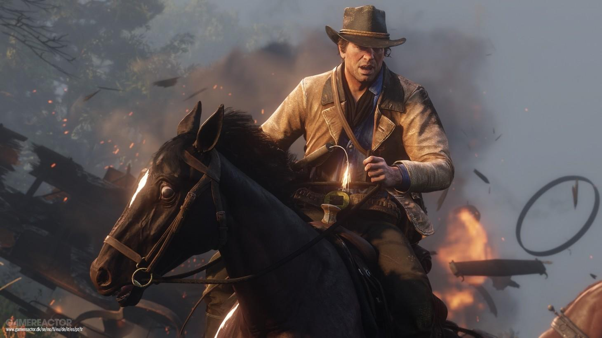
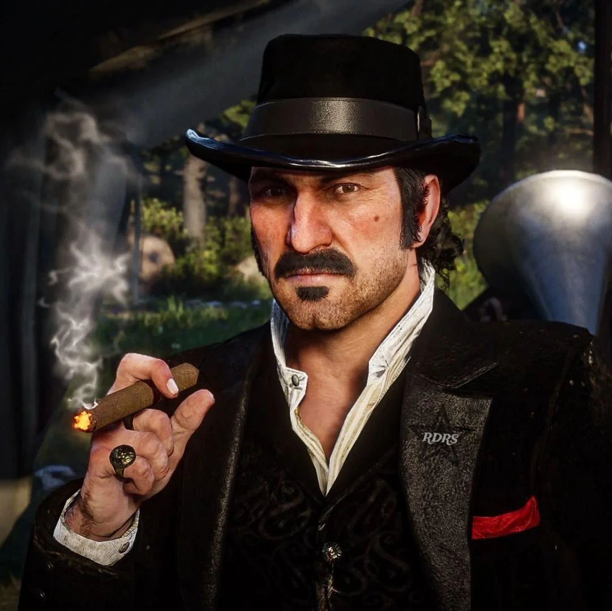
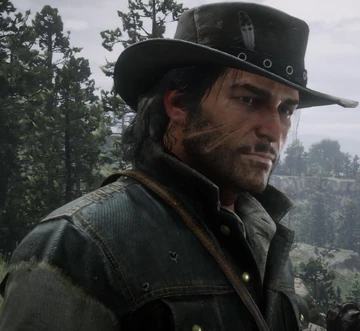

Personagens

Arthur Morgan
Protagonista e membro leal da gangue Van der Linde

Dutch van der Linde
Líder "carismático" da gangue, mas nem tanto...veja você mesmo jogando e desfrutando dessa obra de arte.

John Marston
Membro importante da gangue no começo muito imaturo e inocente mas que no futuro se torna um grande personagem.

Sadie Adler
Uma sobrevivente determinada e sedenta por vingança que se junta à gangue.